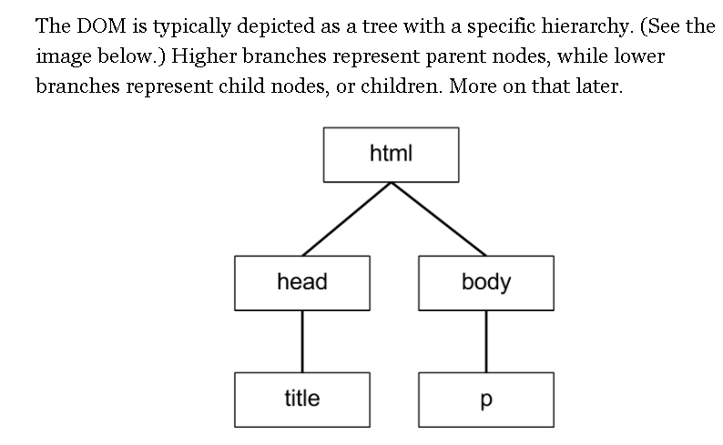

The Document Object Model, or DOM, is an object-oriented representation of an HTML document or Web page, meaning that the document is represented as objects, or nodes. It allows developers to access the document via a programming language, like Javascript.

A node is the generic name for any type of object in the DOM hierarchy. A node could be one of the built-in DOM elements such as document or document.body, it could be an HTML tag specified in the HTML such as <input> or <p> or it could be a text node that is created by the system to hold a block of text inside another element. So, in a nutshell, a node is any DOM object.
An element is one specific type of node as there are many other types of nodes (text nodes, comment nodes, document nodes, etc...).
The DOM consists of a hierarchy of nodes where each node can have a parent, a list of child nodes and a nextSibling and previousSibling. That structure forms a tree-like hierarchy. The document node would have its list of child nodes (the head node and the body node). The body node would have its list of child nodes (the top level elements in your HTML page) and so on.
So, a nodeList is simply an array-like list of nodes.
An element is a specific type of node, one that can be directly specified in the HTML with an HTML tag and can have properties like an id or a class. can have children, etc... There are other types of nodes such as comment nodes, text nodes, etc... with different characteristics. Each node has a property .nodeType which reports what type of node it is. You can see the various types of nodes here (diagram from MDN):

You can see an ELEMENT_NODE is one particular type of node where the nodeType property has a value of 1.
So document.getElementById("test") can only return one node and it's guaranteed to be an element (a specific type of node). Because of that it just returns the element rather than a list.
Since document.getElementsByClassName("para") can return more than one object, the designers chose to return a nodeList because that's the data type they created for a list of more than one node. Since these can only be elements (only elements typically have a class name), it's technically a nodeList that only has nodes of type element in it and the designers could have made a differently named collection that was an elementList, but they chose to use just one type of collection whether it had only elements in it or not.
we have an HTML file that includes the following div:
HTML
<div id="”catch-me-if-you-can”">HI!</div>
This HTML <div -- CSS Selector --</div> element is available in the DOM for us to reference and manipulate.
CSS selectors define the elements to which a set of CSS rules apply.
Basic selectors
- Universal selector
- Selects all elements. Optionally, it may be restricted to a specific namespace or to all namespaces.
- Syntax:
*ns|**|* - Example:
*will match all the elements of the document. - Type selector
- Selects all elements that have the given node name.
- Syntax:
elementname - Example:
inputwill match any<input>element. - Class selector
- Selects all elements that have the given
classattribute. - Syntax:
.classname - Example:
.indexwill match any element that has a class of "index". - ID selector
- Selects an element based on the value of its
idattribute. There should be only one element with a given ID in a document. - Syntax:
#idname - Example:
#tocwill match the element that has the ID "toc". - Attribute selector
- Selects all elements that have the given attribute.
- Syntax:
[attr][attr=value][attr~=value][attr|=value][attr^=value][attr$=value][attr*=value] - Example:
[autoplay]will match all elements that have theautoplayattribute set (to any value).
Grouping selectors
- Selector list
- The
,is a grouping method, it selects all the matching nodes. - Syntax:
A, B - Example:
div, spanwill match both<span>and<div>elements.
Combinators
- Descendant combinator
- The
- Syntax:
A B - Example:
div spanwill match all<span>elements that are inside a<div>element. - Child combinator
- The
>combinator selects nodes that are direct children of the first element. - Syntax:
A > B - Example:
ul > liwill match all<li>elements that are nested directly inside a<ul>element. - General sibling combinator
- The
~combinator selects siblings. This means that the second element follows the first (though not necessarily immediately), and both share the same parent. - Syntax:
A ~ B - Example:
p ~ spanwill match all<span>elements that follow a<p>, immediately or not. - Adjacent sibling combinator
- The
+combinator selects adjacent siblings. This means that the second element directly follows the first, and both share the same parent. - Syntax:
A + B - Example:
h2 + pwill match all<p>elements that directly follow an<h2>. - Column combinator
- The
||combinator selects nodes which belong to a column. - Syntax:
A || B - Example:
col || tdwill match all<td>elements that belong to the scope of the<col>.
Using JavaScript, we can reference this element by scanning the document and finding the element by its id with the method:
document.getElementById().
->We then assign (capture with a variable initialized to the html reference) the reference to a variable.
Javascript
const divOfInterest = document.getElementById(“catch-me-if-you-can”)
Now let’s say that our HTML file contains seven span elements that share a class name of cloudy, like below:
 Can also be written as shown below:
Can also be written as shown below:HTML
<span class="“cloudy”"></span><span class="“cloudy”"></span><span class="“cloudy”"></span><span class="“cloudy”"></span><span class="“cloudy”"></span><span class="“cloudy”"></span><span class="“cloudy”"></span>
In Javascript, we can reference all seven of these elements and store them in a single variable.
Javascript
const cloudySpans = document.querySelectorAll("span.cloudy");
While getElementById allows us to reference a single element,
querySelectorAll references all elements with the class name “cloudy” as a static NodeList (static meaning that any changes in the DOM do not affect the content of the collection).
Note that a NodeList is different from an array, but it is possible to iterate over a NodeList as with an array using forEach().
NodeList objects are collections of nodes, usually returned by properties such as Node.childNodes and methods such as document.querySelectorAll().
Live vs. Static NodeLists
Although they are both considered NodeLists, there are 2 varieties of NodeList: live and static.
Live NodeLists
In some cases, the NodeList is live, which means that changes in the DOM automatically update the collection.
const parent = document.getElementById('parent');let child_nodes = parent.childNodes;
console.log(child_nodes.length); // let's assume "2"
parent.appendChild(document.createElement('div'));
console.log(child_nodes.length); // outputs "3"
Static NodeLists
In other cases, the NodeList is static, where any changes in the DOM does not affect the content of the collection. The ubiquitous document.querySelectorAll() method returns a static NodeList.
It's good to keep this distinction in mind when you choose how to iterate over the items in the NodeList, and whether you should cache the list's length.
Properties
NodeList.length- The number of nodes in the
NodeList.
Methods
NodeList.item()- Returns an item in the list by its index, or
nullif the index is out-of-bounds. - An alternative to accessing
nodeList[i](which instead returnsundefinedwheniis out-of-bounds). This is mostly useful for non-JavaScript DOM implementations. NodeList.entries()- Returns an
iterator, allowing code to go through all key/value pairs contained in the collection. (In this case, the keys are numbers starting from0and the values are nodes.) NodeList.forEach()- Executes a provided function once per
NodeListelement, passing the element as an argument to the function. NodeList.keys()- Returns an
iterator, allowing code to go through all the keys of the key/value pairs contained in the collection. (In this case, the keys are numbers starting from0.) NodeList.values()- Returns an
iteratorallowing code to go through all values (nodes) of the key/value pairs contained in the collection.
Example
for (let i = 0; i < myNodeList.length; i++) {
let item = myNodeList[i];}
Don't use for...in to enumerate the items in NodeLists, since they will also enumerate its length and item properties and cause errors if your script assumes it only has to deal with element objects. Also, for..in is not guaranteed to visit the properties in any particular order.
const list = document.querySelectorAll('input[type=checkbox]');for (let checkbox of list) {
checkbox.checked = true;}
Recent browsers also support iterator methods (forEach()) as well as entries(), values(), and keys().
const list = document.querySelectorAll('input[type=checkbox]');Array.prototype.forEach.call(list, function (checkbox) {
checkbox.checked = true;});
Using forEach() on a NodeList:
Javascript
const cloudySpans = document.querySelectorAll("span.cloudy");//cloudy spans is a node list
cloudySpans.forEach(span => {
console.log("Cloudy!");
});
Creating New DOM Elements
Now that we know how to reference DOM elements, let's try creating new elements. First we'll set up a basic HTML file with the appropriate structure and include a reference to a Javascript file that exists in the same directory in the head.
HTML
<!DOCTYPE html><html>
<head>
<title></title>
<script type="text/javascript" src="example.js"></script>
</head>
<body></body></html>
In our example.js file, we'll write a function to:
create a new h1 element,
assign it an id,
give it content,
and attach it to the body of our HTML document.
Javascript
const addElement = () => {
// create a new div element
const newElement = document.createElement("h1");
// set the h1's id
newElement.setAttribute("id", "sleeping-giant");
// and give it some content
const newContent = document.createTextNode("Jell-O, Burled!");
// add the text node to the newly created div
//The Node.cloneNode() method can be used to make a copy of the node before appending it under the new parent.
//Note that the copies made with cloneNode will not be automatically kept in sync.
newElement.appendChild(newContent);
// add the newly created element and its content into the DOM
document.body.appendChild(newElement);};// run script when page is loadedwindow.onload = addElement;
If we open up our HTML file in a browser, we should now see the words Jell-O Burled! on our page.
If we use the browser tools to inspect the page (right-click on the page and select “inspect”, or hotkeys fn + f12), we notice the new h1 with the id we gave it.
Sets the value of an attribute on the specified element. If the attribute already exists, the value is updated; otherwise a new attribute is added with the specified name and value.To get the current value of an attribute, use getAttribute(); to remove an attribute, call removeAttribute().


Syntax
var text = document.createTextNode(data);
Example
<!DOCTYPE html><html lang="en"><head><title>createTextNode example</title><script>function addTextNode(text) {
var newtext = document.createTextNode(text),
p1 = document.getElementById("p1");
p1.appendChild(newtext);}</script></head>
<body>
<button onclick="addTextNode('YES! ');">YES!</button>
<button onclick="addTextNode('NO! ');">NO!</button>
<button onclick="addTextNode('WE CAN! ');">WE CAN!</button>
<hr />
<p id="p1">First line of paragraph.</p></body></html>
The Node.appendChild() method adds a node to the end of the list of children of a specified parent node. If the given child is a reference to an existing node in the document, appendChild() moves it from its current position to the new position (there is no requirement to remove the node from its parent node before appending it to some other node).
This means that a node can't be in two points of the document simultaneously. So if the node already has a parent, the node is first removed, then appended at the new position. The Node.cloneNode() method can be used to make a copy of the node before appending it under the new parent. Note that the copies made with cloneNode will not be automatically kept in sync.
If the given child is a DocumentFragment, the entire contents of the DocumentFragment are moved into the child list of the specified parent node.
Syntax
element.appendChild(aChild)
Parameters
aChild- The node to append to the given parent node (commonly an element).
Return value
The returned value is the appended child (aChild), except when aChild is a DocumentFragment, in which case the empty DocumentFragment is returned.
Notes
Chaining may not work as expected, due to appendChild() returning the child element:
let aBlock = document.createElement('block').appendChild( document.createElement('b') );
Sets aBlock to <b></b> only, which is probably not what you want.
Example
// Create a new paragraph element, and append it to the end of the document bodylet p = document.createElement("p");
document.body.appendChild(p);
Javascript
const addElements = () => {
// create a new div element
//Notice that our function is now called addElements, plural,
// because we're appending two elements to the body
const newElement = document.createElement("h1");
// set the h1's id
newElement.setAttribute("id", "sleeping-giant");
// and give it some content
const newContent = document.createTextNode("Jell-O, Burled!");
// add the text node to the newly created div
newElement.appendChild(newContent);
// add the newly created element and its content into the DOM
document.body.appendChild(newElement);
// append a second element to the DOM after the first one
const lastElement = document.createElement("div");
lastElement.setAttribute("id", "lickable-frog");
document.body.appendChild(lastElement);};// run script when page is loadedwindow.onload = addElements;
Referencing a JS File vs. Using a Script Block
HTML
<!DOCTYPE html><html>
<head>
<script type="text/javascript">
//Javascript goes here!
</script>
</head>
<body></body></html>
Inside of our script block, we'll:
- create a ul element with no id
- create an li element with the id dreamy-eyes
- add the li as a child to the ul element
- add the ul element as the first child of the body element.
HTML
<!DOCTYPE html><html>
<head>
<title>My Cool Website</title>
<script type="text/javascript">
const addListElement = () => {
const listElement = document.createElement("ul");
const listItem = document.createElement("li");
listItem.setAttribute("id", "dreamy-eyes");
listElement.appendChild(listItem);
document.body.prepend(listElement);
};
window.onload = addListElement;
</script>
</head>
<body></body></html>
Refresh the HTML in your browser, inspect the page, and notice the ul and li elements that were created in the script block.
Window.onload:
Syntax
target.onload = functionRef;
Value
functionRef is the handler function to be called when the window’s load event fires.
Examples
window.onload = function() {
init();
doSomethingElse();};
<!doctype html><html>
<head>
<title>onload test</title>
// ES5
<script>
function load() {
console.log("load event detected!");
}
window.onload = load;
</script>
// ES2015
<script>
const load = () => {
console.log("load event detected!");
}
window.onload = load;
</script>
</head>
<body>
<p>The load event fires when the document has finished loading!</p>
</body></html>
Notes
The load event fires at the end of the document loading process. At this point, all of the objects in the document are in the DOM, and all the images, scripts, links and sub-frames have finished loading.
There are also DOM Events like DOMContentLoaded and DOMFrameContentLoaded (which can be handled using EventTarget.addEventListener()) which are fired after the DOM for the page has been constructed, but do not wait for other resources to finish loading.
Incomplete.....